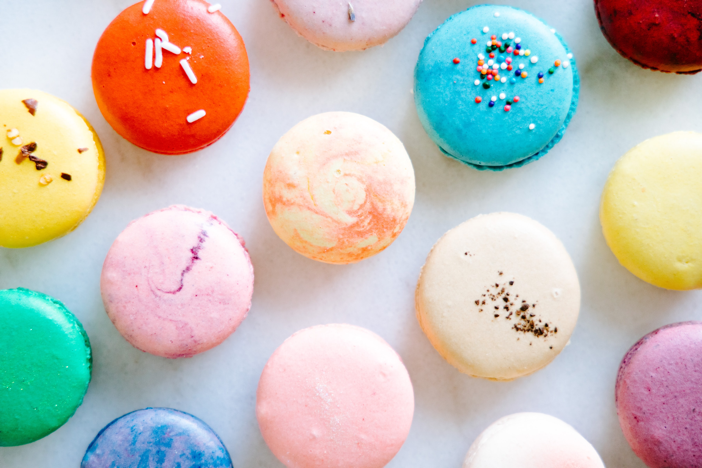

Hours:
Hours:
Monday - Saturday
7am to noon
Location:
Mondays, Wednesdays, Fridays: University of Memphis Area Park & Highland next to CodeCrew Tuesdays: Rhodes College Area University Street & Jackson Avenue Thursdays: CBU Area Central & East Parkway Saturdays: Downtown at the Memphis Farmer’s Market
About Carbs & Cold Brews
Carbs & Cold Brews is a iced coffee and baked goods food truck that was founded in 2021 in Memphis, Tennessee. Find us near one of the college campuses and grab an iced coffee and banana muffin on your way to class!